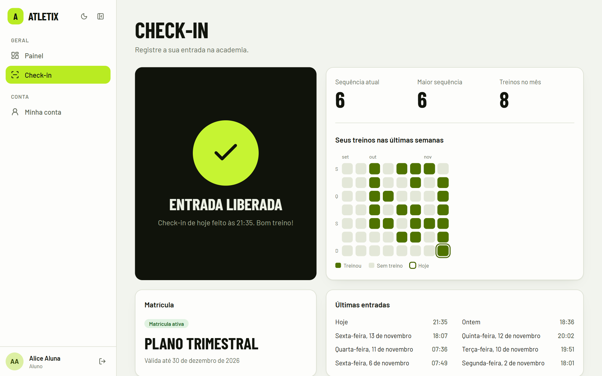
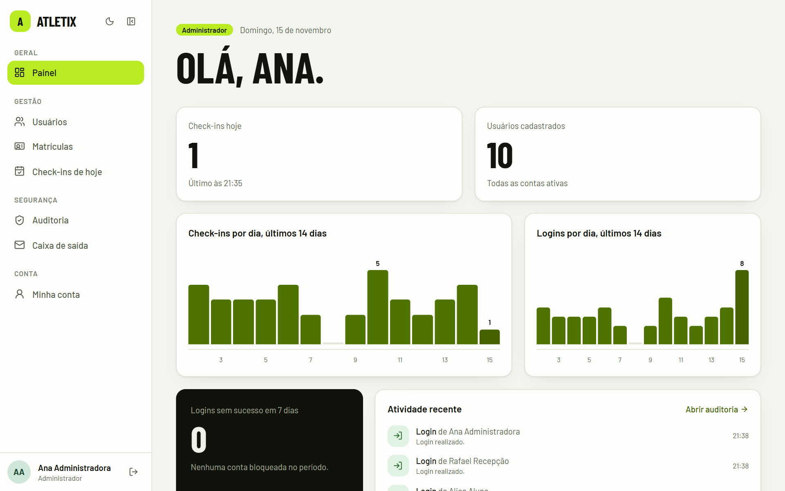
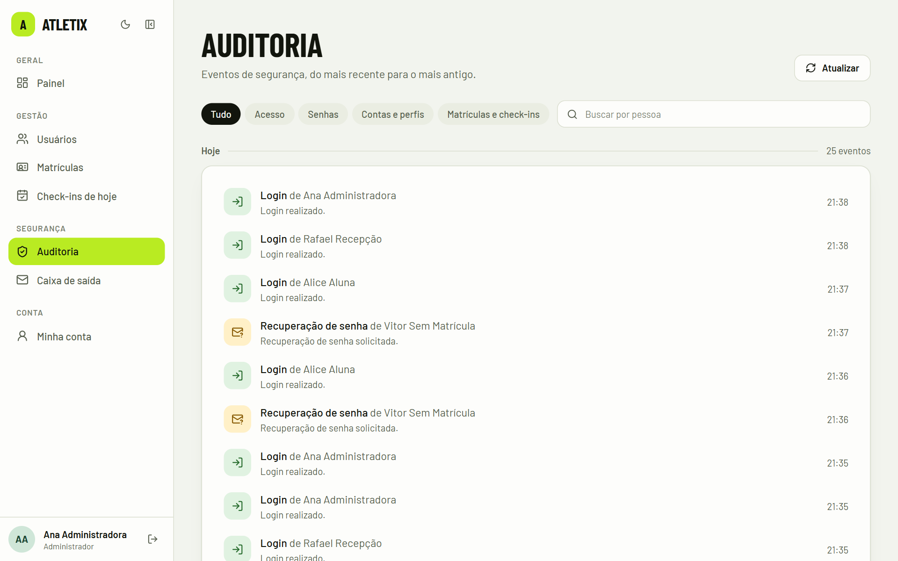

Sistema de gestão de academias com foco em controle de autenticação
Toda tela precisa saber quem é a pessoa e o que ela pode fazer. Quando cada tela resolve isso do seu jeito, três coisas acontecem.
Trocar o algoritmo de senha ou o tempo de sessão obriga a mexer em vários pontos ao mesmo tempo.
Uma rota esquece de conferir o perfil e um aluno executa uma ação de administrador.
Segundo fator, login social e aplicativo ficam difíceis sem um ponto único de identidade.
| Prioridade | Característica | Como medimos |
|---|---|---|
| 1ª | Segurança | Conta desativada perde o acesso na requisição seguinte |
| 2ª | Manutenibilidade | Trocar o hash de senha altera só o módulo Identidade |
| 3ª | Evolutividade | Segundo fator entra sem tocar em Check-in ou Matrículas |
| depois | Escalabilidade | Uma unidade, centenas de alunos: demanda moderada |
Richards e Ford: escolher poucas características. Otimizar todas gera uma arquitetura genérica e cara.
Rejeitada. Uma mudança de negócio atravessa controllers, services e repositories. Baixa modularidade.
Rejeitada. Colocaria a rede no meio da autenticação e exigiria infraestrutura que não cabe no prazo.
Escolhida. Um único processo, sete módulos com fronteiras verificadas por ferramenta.
Simplicidade para rodar e testar, chamadas em memória, cada mudança de negócio em um módulo.
Implantar e escalar cada módulo separadamente, e isolar falhas entre eles.
| Identidade | Quem é o usuário |
| Autorização | O que ele pode fazer |
| Usuários | Cadastro e status da conta |
| Matrículas | Plano e validade |
| Check-in | Entrada do aluno |
| Notificações | E-mails |
| Auditoria | Trilha de segurança |
Seta contínua: chamada pelo contrato.
Seta tracejada: evento.
| Módulo | Propósito único |
|---|---|
| Identidade | Provar quem é o usuário e manter a sessão |
| Autorização | Controlar o que cada pessoa pode fazer |
| Usuários | Manter o cadastro e o status da conta |
| Matrículas | Saber se o vínculo do aluno está valendo |
| Check-in | Decidir e registrar a entrada |
| Notificações | Comunicar um fato ao destinatário |
| Auditoria | Reconstituir o que aconteceu |
Em todos os sete, as partes existem para o mesmo fim. É o nível mais alto da escala do livro.
Uma classe Usuario com nome, senha e papel: três motivos para mudar no mesmo lugar.
| Módulo | Depende de | Ca | Ce |
|---|---|---|---|
| Usuários | ninguém | 5 | 0 |
| Identidade | Usuários | 2 | 1 |
| Matrículas | Usuários | 3 | 1 |
| Check-in | Usuários, Matrículas | 2 | 2 |
| Notificações | eventos da Identidade | 1 | 1 |
| Autorização | nomes de permissões | 1 | 5 |
| Auditoria | eventos de todos | 1 | 5 |
Quando quem chama precisa da resposta. O Check-in pergunta a Matrículas se o aluno está em dia.
Quando outros precisam reagir a algo que já aconteceu. Quem publica não conhece quem assina.
Ao lado: desativar uma conta. Usuários não chama ninguém.
| Tipo | Onde aparece | Tratamento | Efeito |
|---|---|---|---|
| Nome | Evento UsuarioDesativado, em três módulos | Reduzida | O nome existe em uma única constante |
| Tipo | Contrato entre Matrículas e Check-in | Mantida | O compilador acusa a divergência |
| Convenção | Cabeçalho Bearer, interface e API | Mantida | Um ponto de cada lado |
| Posição | Construtor de SenhaAlterada | Mantida | Confinada à Identidade |
| Execução | Autenticar antes de autorizar | Reduzida | A ordem está em um único método |
| Temporal | Validade do link de recuperação | Mantida | A duração muda em um lugar |
| Valor | Papel do usuário no token | Eliminada | O papel não vai no token |
Regra do livro: quanto mais distantes as partes, mais fraca deve ser a conascência entre elas.
| Token de acesso | Token de renovação | |
|---|---|---|
| Validade | 15 minutos | 7 dias |
| Conteúdo | Usuário e sessão | Nenhum (aleatório) |
| No banco | Não fica | Só o hash |
Cada renovação invalida o token usado. Se um token antigo reaparece, todas as sessões caem.
Trade-off assumido: consultar o banco em toda requisição abre mão da vantagem do JWT, em troca de poder revogar o acesso imediatamente.
regras de arquitetura que falham o build se uma fronteira for furada
testes de unidade, com dublês no lugar dos outros módulos
testes de ponta a ponta com a aplicação inteira
A sondagem achou 4 falhas, como o token que continuava valendo depois do logout. Todas corrigidas e cobertas por teste.



github.com/dudumiranda3105/Atletix